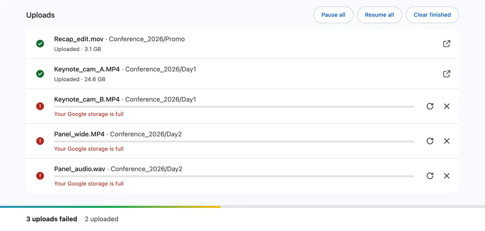

Why does Google Drive say 'server rejected your upload attempt'?
Published · Updated · By Sai Nath
"Server rejected your upload attempt" is not a message Google documents, so its exact cause is unknown. It most likely means a refusal, not a fault. Documented refusals include full storage, the daily upload cap, no permission on the folder, or an expired sign-in. Check storage first, then the folder, then sign in again.
This guide comes from the maker of Uploft, the Chrome extension mentioned below. Google's behaviour links to Google's own pages and was checked on 29 October 2026; what the extension does comes from its source code.
What the message means
Google's help and developer pages do not list this wording, so nobody outside Google can say which check produced it on a given day. What is documented is that Drive's API refuses an upload with a stated reason: an HTTP status and a reason code. The causes below are the documented refusals that stop an upload from being saved, in the order worth checking. A refusal is different from a dropped connection: repeating the same upload gives the same answer until the cause is changed.
Storage full or daily cap
Full storage is the first thing to rule out. Google's help says
that when an account reaches its storage limit, "you won't be
able to upload or create files in Drive". Storage is shared by
Drive, Gmail and Google Photos. The Drive API reports it as a
403 with the reason storageQuotaExceeded
("The user's Drive storage quota has been exceeded"), and its
fix is to free up space or buy more.
- Open Storage in Drive's left-hand menu and compare used with total.
- Empty Trash and Spam, or delete large files in Drive, Gmail or Google Photos.
- Wait before retrying: Google says to allow up to 48 to 72 hours for storage to update after deleting many files at once.
The other cap is a daily one. Google Workspace's admin help says "Each user can upload and copy 750 GB to Drive within 24 hours", and that users at the limit "can't upload or copy more files until the limit refreshes", which happens within 24 hours. Google's consumer storage page does not state this figure, so treat it as documented for Workspace accounts. Split a very large batch across days.

No permission on the folder
Uploading into a shared folder needs the right role. Google's
sharing help says an Editor can "add new files" to a shared
folder, while a Viewer "cannot make changes". A Commenter can
comment on files but cannot change the folder. The API names
this insufficientFilePermissions: "The user does
not have sufficient permissions", and says to ask the owner for
edit access.
- Open the folder in Drive and check that it says you can edit, or ask the owner to change your role.
- Upload to My Drive as a test. If that works, the folder is the cause.
- A folder that was deleted or is no longer shared with you can also stop the upload.
Expired sign-in
An upload sent with a sign-in that is no longer valid is refused
with 401 and the message "Invalid Credentials".
Google's fix for apps is to refresh the access token with the
long-lived refresh token, or start the sign-in again if that
fails. For a person using Drive in a browser, the equivalent is
to sign out of the account, sign back in, and retry. Signing in
with the wrong Google account is worth ruling out too.
403 Forbidden on upload
Google says 403 errors mean "a usage limit has been
exceeded or the user doesn't have the correct privileges". It
covers several causes above and below, so read the
reason that comes with it:
storageQuotaExceeded: storage is full, as above.insufficientFilePermissions: no edit access to the folder or file.appNotAuthorizedToFile: the app has not been given access to that file. Google says to open it through the Drive picker or the "Open with" menu.userRateLimitExceeded: too many requests from one user in a short time. Google says to retry with exponential backoff.
Drive's own website may not show these codes, so there the steps are the same list: storage, folder role, sign-in.
What the extension does on each failure
Uploft is a free Chrome extension (Chrome 116 or later, on a computer). Its uploader page separates refusals from drops, using the status Drive returns.
- Retried with back-off: network drops, timeouts,
429,5xxand rate-limit reasons. The wait starts at 1 second and doubles up to 60 seconds. A file is marked failed after 20 failures in a row with no progress. - Not retried: full storage, the daily cap and missing permission. These fail at once, because trying again cannot change the answer.
A failed file shows a plain reason instead of a code: "Your Google storage is full", "Drive daily upload limit reached (750 GB). Try again tomorrow", "No permission to add files to this folder", or "No access to the destination folder. Choose it again". On drive.google.com, the extension also clicks Drive's own Retry after 5, 20 and 60 seconds; that helps after a drop and does nothing for a refusal.
The extension cannot make storage appear, raise the daily cap, grant a role or replace Google's sign-in. It is not on the Chrome Web Store yet, and the Google sign-in for its uploader page is in testing mode, so only listed test users can sign in for now.
Uploft is free, and its source code is public. It isn't on the Chrome Web Store yet; the home page shows what it does and what it asks for.
Sources
Checked on 29 October 2026.
- Google for Developers: Resolve errors (Drive API: 401, 403 reasons, 429, 5xx).
- Google Drive Help: Storage limits and what happens when storage is full.
- Google Drive Help: Share files from Google Drive (sharing roles).
- Google Workspace Admin Help: Storage and upload limits (750 GB per 24 hours).
- Uploft: source code (upload engine and error handling).